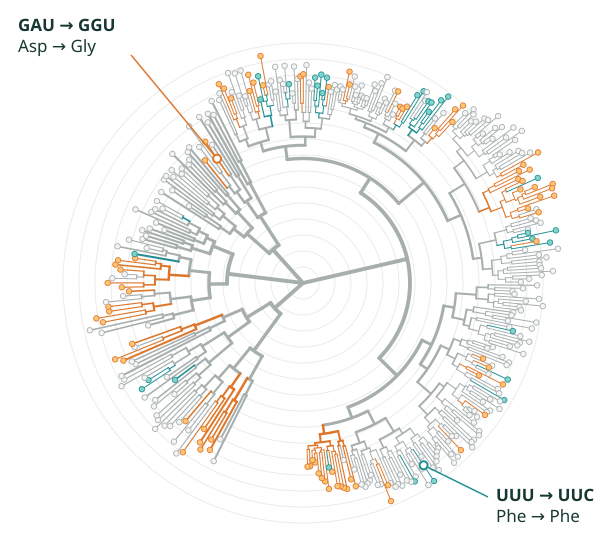

From codons
to viromes.
I build statistical models and software to study how genes evolve. My work ranges from testing how natural selection shapes a single gene to mapping RNA virus diversity across cities.

Research areas
All research →Statistical Molecular Evolution
How do changes within a codon affect tests for selection?
Computational Methods for Evolutionary Genomics
How can we compare selection across hundreds of genes or clades?
Large-Scale Viral Genomics and Meta-omics
What can environmental RNA reveal about viral diversity?
Alexander G. Lucaci, Ph.D.
Postdoctoral Associate in Systems and Computational Biomedicine at Weill Cornell Medicine. I earned my Ph.D. in Bioinformatics at Temple University, where I studied molecular evolution in the Viral Evolution Group.